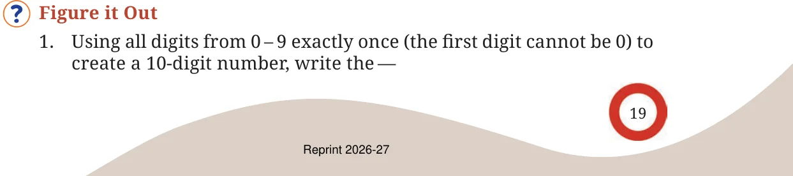
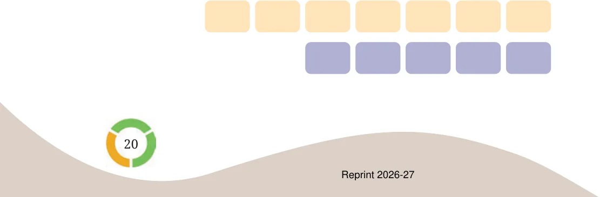

The population of Mumbai is more than 1 crore 24 lakhs (we saw this in an earlier table). So, the entire population of Mumbai cannot fit in 1 lakh buses. The RMS Titanic ship carried about 2500 passengers. Can the population of Mumbai fit into 5000 such ships?
Inspired by this strange question, Roxie wondered, “If I could travel 100 kilometers every day, could I reach the Moon in 10 years?” (The distance between the Earth and the Moon is 3,84,400 km.) How far would she have travelled in a year? How far would she have travelled in 10 years? Is it not easier to perform these calculations in stages? You can use this method for all large calculations.
Find out if you can reach the Sun in a lifetime, if you travel 1000 kilometers every day. (You had written down the distance between the Earth and the Sun in a previous exercise.)
Make necessary reasonable assumptions and answer the questions below:
- (a)If a single sheet of paper weighs 5 grams, could you lift one
lakh sheets of paper together at the same time?
- (b)If 250 babies are born every minute across the world, will a
million babies be born in a day?
- (c)Can you count 1 million coins in a day? Assume you can count
1 coin every second.
Think and create more such fun questions and share them with your class.

- (a)Largest multiple of 5
- (b)Smallest even number
- 2.The number 10,30,285 in words is Ten lakhs thirty thousand two
hundred eighty five, which has 42 letters. Give a 7-digit number name which has the maximum number of letters.
- 3.Write a 9-digit number where exchanging any two digits results in
a bigger number. How many such numbers exist?
- 4.Strike out 10 digits from the number 12345123451234512345 so
that the remaining number is as large as possible.
- 5.The words ‘zero’ and ‘one’ share letters ‘e’ and ‘o’. The words ‘one’
and ‘two’ share a letter ‘o’, and the words ‘two’ and ‘three’ also share a letter ‘t’. How far do you have to count to find two consecutive numbers which do not share an English letter in common?
- 6.Suppose you write down all the numbers 1, 2, 3, 4, …, 9, 10, 11, ...
The tenth digit you write is ‘1’ and the eleventh digit is ‘0’, as part of the number 10.
- (a)What would the 1000th digit be? At which number would it
occur?
- (b)What number would contain the millionth digit?
- (c)When would you have written the digit ‘5’ for the 5000th
time?
- 7.A calculator has only ‘+10,000’ and ‘+100’ buttons. Write an
expression describing the number of button clicks to be made for the following numbers:
- (a)20,800
- (b)92,100
- (c)1,20,500
- (d)65,30,000
- (e)70,25,700
- 8.How many lakhs make a billion?
- 9.You are given two sets of number cards numbered from \(1 - 9\). Place
a number card in each box below to get the (a) largest possible sum
- (b)smallest possible difference of the two resulting numbers.

- 10.You are given some number cards; 4000, 13000, 300, 70000,
150000, 20, 5. Using the cards get as close as you can to the numbers below using any operation you want. Each card can be used only once for making a particular number.
- (a)1,10,000: Closest I could make is \(4000 \times (20 + 5) + 13000\)
\(= 1,13,000\)
- (b)2,00,000:
- (c)5,80,000:
- (d)12,45,000:
- (e)20,90,800:
- 11.Find out how many coins should be stacked to match the height of
the Statue of Unity. Assume each coin is 1 mm thick.
- 12.Grey-headed albatrosses have a roughly 7-feet wide wingspan.
They are known to migrate across several oceans. Albatrosses can cover about \(900 - 1000\) km in a day. One of the longest single trips recorded is about 12,000 km. How many days would such a trip take to cross the Pacific Ocean approximately?
- 13.A bar-tailed godwit holds the record for the longest recorded
non-stop flight. It travelled 13,560 km from Alaska to Australia without stopping. Its journey started on 13 October 2022 and continued for about 11 days. Find out the approximate distance it covered every day. Find out the approximate distance it covered every hour.
- 14.Bald eagles are known to fly as high as \(4500 - 6000 m\) above the
ground level. Mount Everest is about 8850 m high. Aeroplanes can fly as high as \(10,000 - 12,800 m\). How many times bigger are these heights compared to Somu’s building?